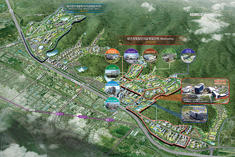
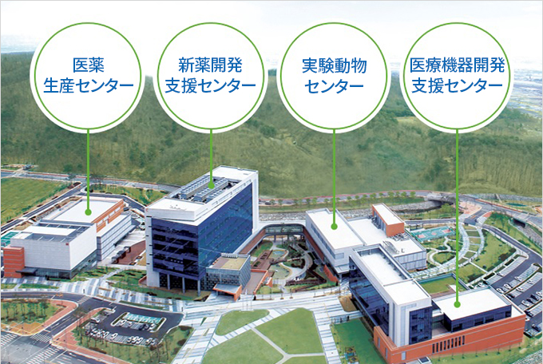

医療産業
- Home
- 主要産業
- 医療産業
先端医療複合団地の造成


団地インフラの構築
- 位置ㆍ規模 : 東区新西洞核心都市内1,030千㎡
- 主要施設 : 新悪開発支援センター、医療機器開発支援センター、実験動物センター、臨床試験新薬生産センターなど
- 事業期間 : 2009年~2038年(団地造成 2010年~2013年)
- 総事業費 : 4.6兆ウォン(国費1.1、地方費0.9、民間資本2.6)
団地内に政府の核心インフラ及び研究支援施設を建設(2010年~2013年、2,649億ウォン)
- 敷地70,100㎡、設計(2010年2月～2011年5月)、工事(2011年10月～2013年11月)
- 新薬ㆍ先端医療機器開発支援センター、実験動物ㆍ臨床試験新薬生産センター、共用施設
研究開発のシナジー効果を創出するためのコミュニケーションセンターを建設(2010年~2013年、342億ウォン)
- 敷地10,112㎡(地下1階、地上8階)、設計(2010年7月～2011年6月)、工事(2011年10月～2013年4月)
団地のインフラ構築のための敷地買入ㆍ支援(2010年~2015年、572億ウォン)
- 敷地買入(政府ㆍ自治体施設、80千㎡)、買入支援(民間入居区域、395千㎡)
- 敷地供給価格の確定及び民間入居区域支援計画の樹立(2011年12月～2012年6月)
団地運営システムの構築
- 本格的なR&D活動のための外部研究施設の確保及び優秀な研究人材の採用(2012年は24人予定)
- センター別中長期事業計画、人材ㆍ装備需給計画など
- 研究開発分野別R&D企画、団地ブランド開発及び独特なマーケティング戦略を樹立
団地支援システムの構築
-
団地の早期活性化を支援するためのメディシティ基金を造成(2011年~2020年、500億ウォン)
- 財源 : 大邱市が造成目標額の90%(450億ウォン)、民間が10%(50億ウォン)を負担
- ディシティ基金運用審議委員会を構成ㆍ運営(15人以内、2012年上半期に構成)
-
ベンチャー企業を支援するための医療産業育成ファンド造成を推進
- 第1次ファンド造成の予想規模 : 160億ウォン(政府80、市10、民間資本70)
-
国内外の医療クラスター、団地内外の研究開発機関の協力体系を構築
- 大学ㆍ機関ㆍ企業、団地内研究開発機関との協議体を構成
- 国内外医療クラスターとネットワーク(企業ㆍ機関協力、人的交流など)を構築
企業ㆍ機関誘致を推進
-
団地のグローバル化のための核心企業ㆍ研究機関を誘致
- 既存MOU締結企業(14社)の後続措置(入居協議、契約締結など)
- アンカー企業、グローバル企業の投資誘致及び有望なベンチャー企業の創業支援など
- 国策研究機関、海外研究所、政府新設研究センターの団地内誘致を推進
先端医療機器産業の育成
療機器産業の基盤構築
-
IT融合・複合医療機器産業の育成のため、有望商品(画像診断、電動車椅子など)の開発及び支援センターを通じたビジネス支援(2009年～2012年、613億ウォン)
- 継続課題(R&D18つ、企業支援2つ)の支援、新規課題の選定(2012年6月～7月)
-
西洋の体型に合う歯科補綴物の加工・輸出、素材開発のためのデンタル素材及び歯科機工クラスターの活性化(2010年～2012年、107億ウォン)
- 輸出支援事業化システムの構築、専門技術人材の育成及びカスタマイズ型臨床教育など
-
医療機器臨床試験の技術水準向上及び活性化のため、医療機器臨床試験センターを構築(2008年～2012年、105億ウォン)
- 臨床試験インフラの構築、医療機器臨床試験及び関連専門家の教育など
IT基盤のヘルスケア産業を育成
-
u-Health分野のグローバル市場進出に向け、IT-Health産業育成事業*(2009年～2012年、18億ウォン)及びスマートケアサービスのモデル事業 **(2010年～2012年、152億ウォン)を推進
- u-Health製品の国際共同開発(ニュージーランド)、テストベッド及びネットワークの構築
- 慢性疾患患者の遠隔画像診療及び運動・投薬など管理システムの構築
-
高齢者配慮製品の理解度向上及び産業化のため、シニア体験館の構築及び運営(2010年～2015年、16億ウォン)
- シニア体験プログラム及び文化センター、高齢者配慮製品の評価室運営など
地域特化医療ブランドの育成

特化医療センター運営
-
慢性ㆍ難治性疾患に西洋式医療ㆍ漢方医療、補完代替医療を適用した治療システムの構築のために統合医療センター建設及び研究開発を推進(2009年～2012年、316億ウォン)
- 工事着工(2011年7月)、センター竣工(2012年)
-
組織再生分野を地域特化医療技術として開発するため、国際再生医学研究所の運営及び特化技術開発を支援(2009年～2013年、49億ウォン)
- 美Wake Forest大学と共同臨床研究、羊水幹細胞を利用した筋組織の再生など
分野別医療技術開発の活性化
-
Medi-Cityとして高い水準の医療技術を確保するため、専門分野別医療R&Dセンターの医療技術開発及び事業化支援(2012年63.9億ウォン)
分野別医療技術開発の活性化 センター名, 研究分野, 2012年事業費 (市費) センター名 研究分野 2012年事業費 (市費) 末期腎不全臨床研究センター 腎不全患者の臨床試験及び標準指針の開発 9.0億ウォン(0.5) 先端診断予測医療技術クラスター 疾病の特異情報発掘及び診断技術の開発 27.7億ウォン(5.0) 人由来生物資源地域拠点銀行 人体ㆍ病原体資源の収集及び分譲 10.4億ウォン(1.0) 頭蓋顔面機能障害研究センター 頭蓋顔面障害制御技術及び治療法開発 10.7億ウォン(1.0) 癌征服研究センター 肺癌治療技術の開発 6.1億ウォン(1.0) -
R&Dを通じて開発された技術の商用化のための癌診断核心技術商用化技術開発(2011年~2015年、135億ウォン)
- 癌診断商用化技術開発、臨床検証及び評価、マーケティング支援など
医療観光の活性化
-
地域の医療観光インフラを活用し、外国人医療観光客誘致活動を強化(2012年に1万人、14億ウォン)
- One-stop支援体系を構築(総合情報センターを運営)
- 整形、漢方など治療ㆍ体験観光の連携商品開発及び活性化、医療観光サポーターズ(通訳)の育成
- 先導医療機関の指定及びマーケティング支援
- ロシア·ベトナムなど新興医療観光需要鉱区を対象にした専制的なマーケティング及び市の姉妹·友好都市連携マーケティング
- 世界トップ水準の毛囊群移植術を地域の代表的な医療観光商品として育成するため、医療観光毛髪移植専用センターの力量強化(民間資本30億ウォン)
バイオㆍ漢方産業の基盤強化
バイオ産業の基盤強化
-
【戦略産業振興】バイオヘルス融合センターを中心に育成基盤を整備、技術支援などバイオ企業の競争力強化(2009年～2012年、85.7億ウォン)
- 健康機能素材育成基盤産業、生物産業技術支援事業、専門人材育成事業など
- 慢性疾患予防技術を開発する食品栄養遺伝対研究センター(2008年～2015年、76億ウォン)、ローカルフードと医療サービスを融合してヒーリング食品ㆍ献立産業を育成するヒーリング用ローカルフードの活性化(2010年～2012年、30.8億ウォン)
- 石油依存度及び二酸化炭素の純排出現象のためのグリーンカーボン基盤バイオ化学産業の育成(2013年～2017年、3,185億ウォン)により、国家競争力及び地域経済を活性化
漢方産業の活性化
-
新薬(天然物ㆍ合成新薬)広報発掘のための天然物の物質銀行を構築(2011年～2014年、64億ウォン)
- 天然物質の分離ㆍ精製及び加工のための協力体系の構築、天然部室総合情報構築など
-
漢方の科学化及び漢方新薬開発のための漢方生命資源研究センターの支援(2003年～2012年、122億ウォン)
- 装備構築及び活用、研究開発及び人材育成、開発技術の事業家、技術移転ㆍ指導
- 方剤科学グローバル研究センター(2011年～2018年、104億ウォン)、漢方製剤の品質向上及び安定的供給のための漢方製剤の剤型現代化(2012年～2016年、80億ウォン)を推進
- 漢方製品の開発及び漢方製品の信頼性確保、漢方治療技術開発、漢方薬材の生産基盤強化のため、漢方産業支援センター(2009年～2012年、18億ウォン)、大邱慶北漢方産業振興院(2012年～2016年、100億ウォン)を運営
-
韓国漢医学研究院漢医技術応用センターの建設(2011年～2013年、236億ウォン)、海外漢方薬材開発事業(2012年、5億ウォン)を推進
- 漢方医学の予防ㆍ治療技術及び融合ㆍ複合技術の実用化など、特化技術開発ハブを構築
- ロシア(ロストフ)に漢方薬材開発団地を造成、漢方薬材の輸入・加工及び流通網の構築、機能性物質及び天然物新薬の開発など